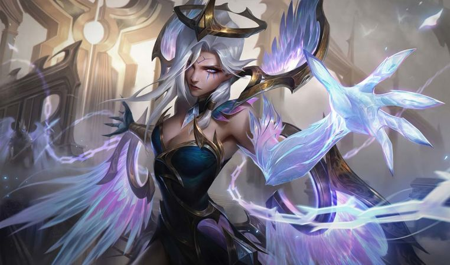

Riven Emissária da Luz
Nascida de redemoinhos de energia no alvorecer da criação, Riven é a perfeição incorporação da ordem nos cosmos. Destinada a enfrentar o Emissário da Escuridão até o fim dos tempos, ela aguarda o dia em que a luz finalmente iluminará a escuridão.
Yasuo Emissária da Escuridão
Nascido a partir de ecos ressonantes no alvorecer da criação, Yasuo é a perfeição incorporação do caos nos cosmos. Destinado a enfrentar a Emissária da Luz até o fim dos tempos, ele aguarda o dia em que a escuridão finalmente apagará a luz.
Yone Emissária da Luz
Segundo as profecias, os deuses acabarão destruindo uns aos outros, como um prenúncio do fim da própria criação... Mas Yone está determinado a desafiar o destino. Nascido metade humano, metade deus, em meio ao conflito entre caos e a ordem, ele detém o poder tanto da noite quanto da alvorada. Yone deve se unir ao seu irmão e trazer paz aos deuses... ou todos sucumbirão.
Kayn Emissária da Escuridão
Rhaast já foi um arconte de luz e um exemplo de ordem... Porém, agora não passa de uma arma nas mãos de Kayn, um ambicioso semideus da noite que busca alcançar a verdadeira divindade. Dentro do corpo de Kayn, uma guerra é travada entre os dois, e cada um deles está determinado a subrepujar o outro e tomar a divindade suprema para si.

Morgana Emissária da Luz
Morgana está determinada a ver a ordem triunfar sobre o caos e sacrificou muitas coisas para fazer a balança pender para o lado da luz. Se a luz vencer, ela acredita que conseguirá evitar a destruição dos deuses e iniciar uma nova era, livre da corrupção do caos. Quando esse dia chegar, talvez Yone finalmente entenda que o equilibrio não passa de um delírio.
Lillia Emissária da Escuridão
Para os pesadelos, uma guardiã; para os sonhos, um demônio... Lillia se deleita nas imaginações distorcidas que atormentam as mentes mortais Apesar de se divertir na guerra entre a ordem e o caos, ela raramente participa do conflito. Afinal, ela tem um jardim para cuidar, sementes de desespero para plantar e um florescer para testemunhar.
Vex Emissária da Luz
Vex encontra ordem no escurecer e, durante o anoitecer, observa sua sombra seguindo o sol sob o horizonte. Sendo uma deusa apática e sobrenaturalmente mal-humorada, ela acha todo esse "lance" de ordem e caos uma chatice sem fim.
Tryndamere Emissário da Escuridão
Tryndamere, uma divindade demoníaca de fúria e batalha, incorpora o momento quando a guerra se torna um frenesi de sangue. A paz é um anátema, mas talvez a cruzada de Yone seja uma oportunidade... Afinal, Tryndamere acredita que o caos se aperfeiçoa quando nasce da decadência da ordem.
Soraka Emissária da Luz
Filha dos deuses nascida quando o caos subjugara a ordem, Soraka abriga tanto os poderes de Riven quanto os de Yasuo. Para encerrar o conflito dos deuses, ela acolheu a luz para abater as trevas, dominando o poder da alvorada para trazer ordem ao mundo caótico.
Soraka Emissária da Escuridão
Filha dos deuses nascida quando o caos subjugara a ordem, Soraka abriga tanto os poderes de Riven quanto os de Yasuo. Para encerrar o conflito dos deuses, ela acolheu a escuridão para atenuar o brilho da luz, dominando o poder da noite para trazer caos a um mundo pacato demais.
Karma Emissária da Luz
Encarregada de governar os ciclos cósmicos da morte e da ressurreição Karma luta para proteger a fonte das almas enquanto elas peregrinam rumo à reencarnação. Ainda mais do que as outras criaturas cósmicas ela se importa com as almas mortais que guia, lutando para criar um mundo mais estruturado.
Aphelios Emissário da Escuridão
Separados assim que nasceram, Aphelios, um demônio do caos, e Alune, arcontessa da ordem, foram criados como inimigos. Porém, compartihando visões lunares todas as noites, eles acabaram se encontrando. Abandonando suas naturezas, eles lutam para mostrar aos seus criadores que as trevas também podem brilhar, mesmo enquanto outras divindades travam uma guerra sem fim...
Nidalee Emissária da Luz
Tanto uma fera celestial quanto um ser primordial que caminha pela aurora, Nidalee governa a restauradora calma do mundo natural. Ela protege os locais pacíficos que ainda existem espalhados pela terra, trazendo luz e ordem às criaturas mortais sob seu cuidado.

Vladimir Emissário da Escuridão
Vladimir, o caótico rei da noite, é a personifcação da incerteza e da regozijo. Ele prospera nas sombras do desconhecido, alimentando-se da essência vital e das trevas que habitam os corações dos mortais.
Vayne Emissária da Luz
Uma deusa superconfiante e ansiosa para mostrar seu potencial aos Emissários da Luz, Vayne caça impiedosamente os Emissários da Escuridão, motivada por um profundo medo da destruição anunciada pelos deuses. Suas ações são tão violentas que ela se atrapalha, deixando um rastro de caos ainda maior por onde passa. Mesmo assim, ela espera que matar Jarvan seja suficiente para consolidar sua posição na luz.
Lee sin Emissário da Escuridão
Lee Sin prospera no calor da batalha. Como uma personificação da dedicação e fúria, ele controla as emoções puras e caóticas do coração Enquanto seus irmãos lutam por diversos ideais, Lee Sin luta pela própria emoção da batalha, com movimentos poderosos e imprevisíveis.
Renekton Emissário da Luz
Após a destruição da ordem pelo caos, dois irmãos nasceram: as personificações da causa, Renekton, e do efeito, Nasus. Como carrasco dos Emissários da Luz, Renekton foi ficando cada vez mais fora de si por enfrentar seus semelhantes, mas ainda segue firme em sua convicção de que tudo deve ter um propósito. Para que serve o caos, senão para causar mais caos?